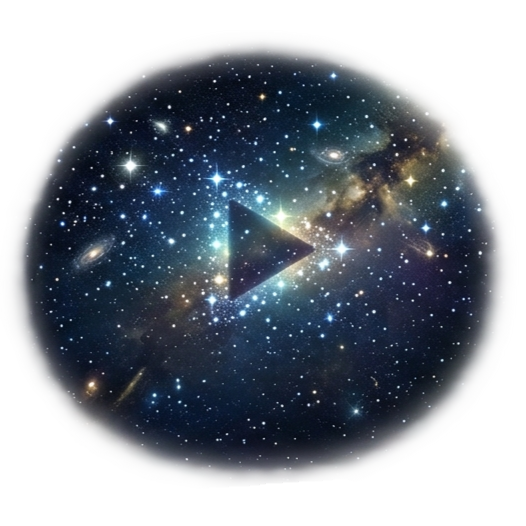
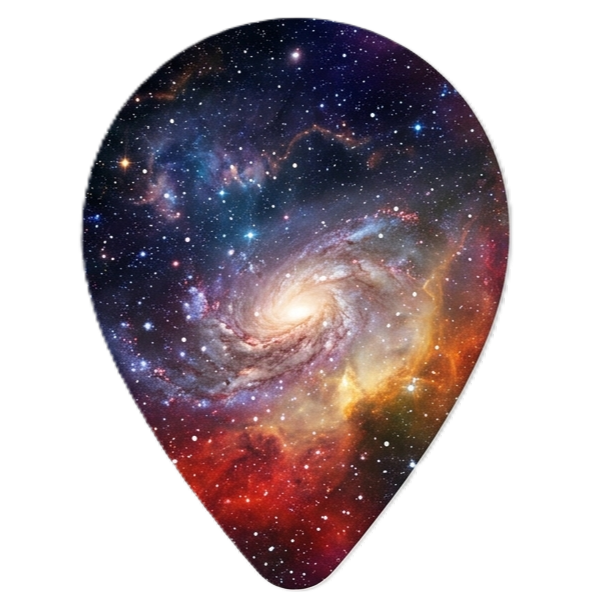
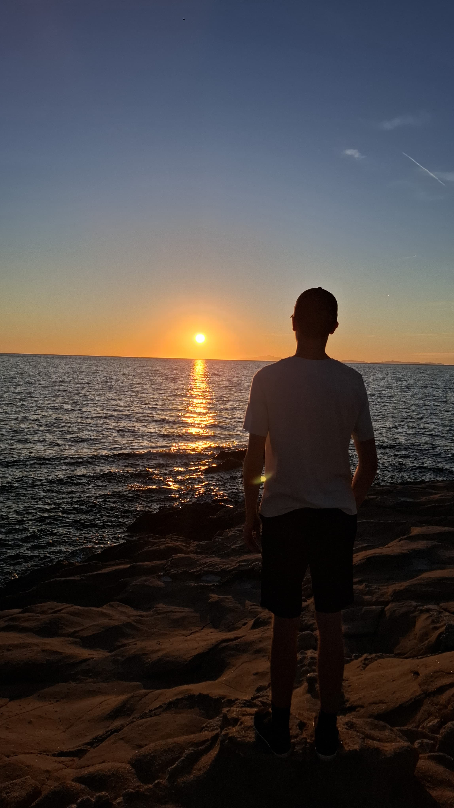
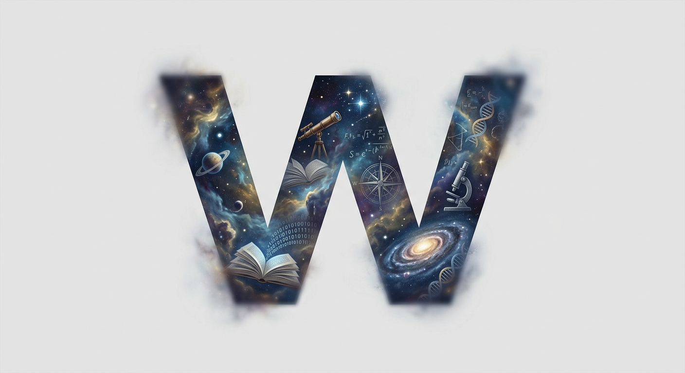
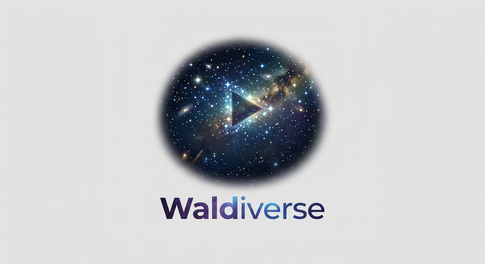

I´m a 17 year old student from Germany and I´m the head behind the WaldOS©! I´m going to graduate next year and I´m really interested in programming and computer science. I´m also a musician and I play the trombone for 5 years now. I´m also a big fan of the videogames like Valheim, which is my favorite game of all time!
It´s probably not:

Enter to start search.
WaldVideo📽️

Search a Fantastic Video in the the WaldVid